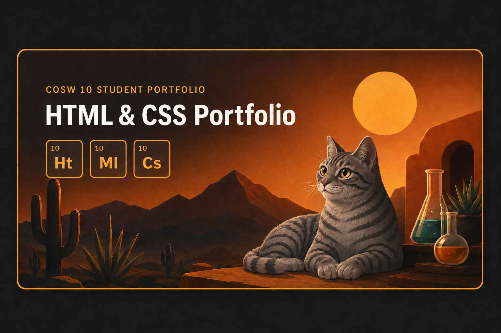

Favorite City
Project 4: Favorite City
A simple city page using sections, images, and navigation.
View ProjectProjects and Labs
These projects and labs show the HTML and CSS skills I practiced during the course.

These four projects show my practice with layout, design, organization, and creativity.
A simple city page using sections, images, and navigation.
View ProjectA creative lab-themed project with cards and a game idea.
View ProjectA longer web page focused on color, layout, and story style.
View ProjectA table practice page for organizing information clearly.
View LabThese three labs show my practice with media, movement, and CSS styling.
A media lab for adding and testing audio and video.
View LabA CSS lab using movement and simple visual effects.
View LabAn early CSS lab with color, spacing, and a cat theme.
View Lab| Project or Lab | Main Skill | What It Demonstrates |
|---|---|---|
| Favorite City | Page structure | Sections, images, navigation, and visual theme. |
| Longevity Lab | Creative design | Cards, theme direction, and game concept. |
| E-Book | Long web page design | Story layout, color choices, and page flow. |
| Table Lab | Organization | Using tables to compare information clearly. |
| Embed Audio and Video | Media practice | Adding and testing media content. |
| CSS Transitions | Movement | Simple CSS motion and visual effects. |
| Styling Web Pages | CSS basics | Color, spacing, styling, and cat theme. |